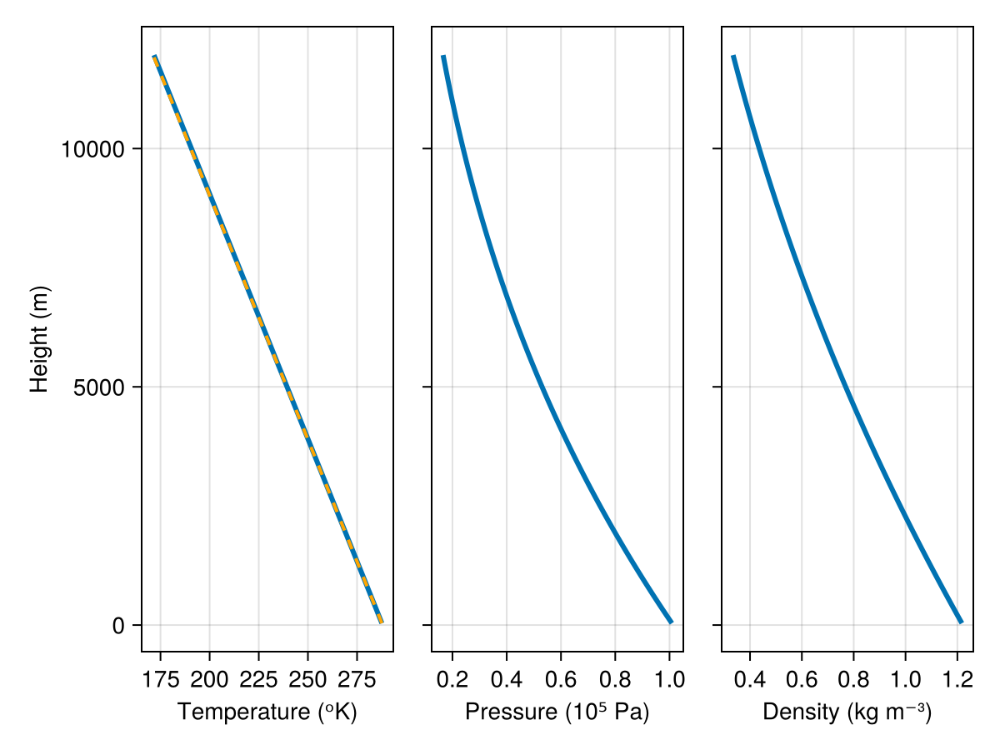
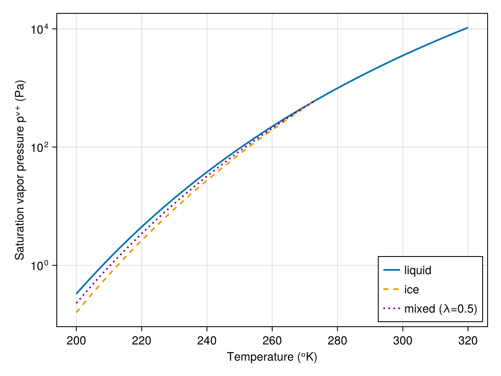
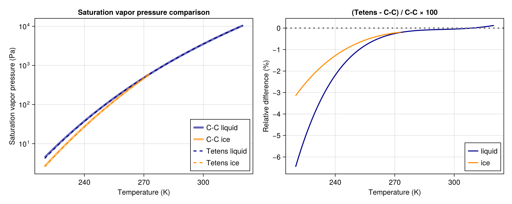
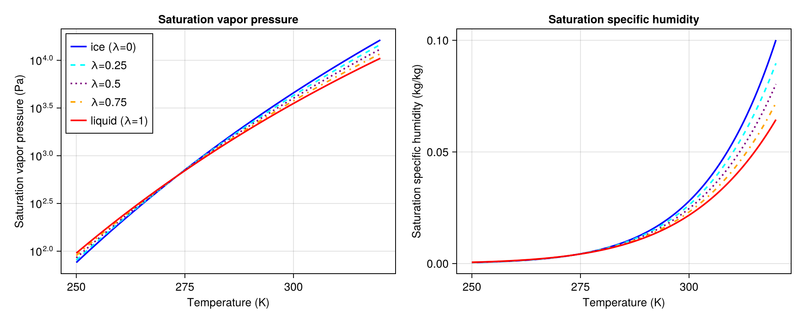

Atmosphere Thermodynamics
Breeze implements thermodynamic relations for moist atmospheres. By "moist", we mean that the atmosphere is a mixture of four components: two gas phases (i) "dry" air and (ii) "vapor", and two "condensed" phases (iii) "liquid", and (iv) "ice". Moisture makes life interesting, because vapor can condense or solidify (and liquid can freeze) into liquid droplets and ice particles - with major consequences.
On Earth, dry air is itself a mixture of gases with fixed composition constant molar mass. Dry air on Earth's is mostly nitrogen, oxygen, and argon, whose combination produces the typical (and Breeze's default) dry air molar mass
using Breezethermo = ThermodynamicConstants()thermo.dry_air.molar_mass0.02897The vapor, liquid, and ice components are $\mathrm{H_2 O}$, also known as "water". Water vapor, which in Breeze has the default molar mass
thermo.vapor.molar_mass0.018015is lighter than dry air. As a result, moist, humid air is lighter than dry air.
Liquid in Earth's atmosphere consists of falling droplets that range from tiny, nearly-suspended mist particles to careening fat rain drops. Ice in Earth's atmosphere consists of crystals, graupel, sleet, hail and, snow.
"Moist" thermodynamic relations for a four-component mixture
What does it mean that moist air is a mixture of four components? It means that the total mass $\mathcal{M}$ of air per volume, or density, $ρ$, can be expressed as the sum of the masses of the individual components over the total volume $V$,
\[ρ = \frac{\mathcal{M}}{V} = \frac{\mathcal{M}ᵈ + \mathcal{M}ᵛ + \mathcal{M}ˡ + \mathcal{M}ⁱ}{V} = ρᵈ + ρᵛ + ρˡ + ρⁱ\]
where $\mathcal{M}ᵈ$, $\mathcal{M}ᵛ$, $\mathcal{M}ˡ$, and $\mathcal{M}ⁱ$ are the masses of dry air, vapor, liquid, and ice, respectively, while $ρᵈ$, $ρᵛ$, $ρˡ$, and $ρⁱ$ denote their fractional densities. We likewise define the mass fractions of each component,
\[qᵈ ≡ \frac{\mathcal{M}ᵈ}{\mathcal{M}} = \frac{ρᵈ}{ρ} , \qquad qᵛ ≡ \frac{\mathcal{M}ᵛ}{\mathcal{M}} = \frac{ρᵛ}{ρ} , \qquad qˡ ≡ \frac{\mathcal{M}ˡ}{\mathcal{M}} = \frac{ρˡ}{ρ}, \qquad \text{and} \qquad qⁱ ≡ \frac{ρⁱ}{ρ} = \frac{\mathcal{M}ⁱ}{\mathcal{M}} .\]
Throughout this documentation, superscripts are used to distinguish the components of moist air:
- $d$ denotes "dry air"
- $v$ denotes "vapor"
- $l$ denotes "liquid"
- $i$ denotes "ice"
A fifth super script $t$ is used to denote "total". For example, $qᵈ$ is the mass fraction of dry air, $qᵛ$ is the mass fraction of vapor, $qˡ$ is the mass fraction of liquid, $qⁱ$ is the mass fraction of ice, and
\[qᵗ = qᵛ + qˡ + qⁱ\]
is the "total" mass fraction of the moisture components.
The liquid and ice components are not always present. For example, a model with warm-phase microphysics does not have ice. With no microphysics at all, there is no liquid or ice.
By definition, all of the mass fractions sum up to unity,
\[1 = qᵈ + qᵛ + qˡ + qⁱ ,\]
so that, using $qᵗ = qᵛ + qˡ + qⁱ$, the dry air mass fraction can be diagnosed with $qᵈ = 1 - qᵗ$. The sometimes tedious bookkeeping required to correctly diagnose the effective mixture properties of moist air are facilitated by Breeze's handy MoistureMassFractions abstraction. For example,
q = Breeze.Thermodynamics.MoistureMassFractions(0.01, 0.002, 1e-5)MoistureMassFractions{Float64}:
├── vapor: 0.01
├── liquid: 0.002
└── ice: 1.0e-5
from which we can compute the total moisture mass fraction,
qᵗ = Breeze.Thermodynamics.total_specific_moisture(q)0.01201And the dry as well,
qᵈ = Breeze.Thermodynamics.dry_air_mass_fraction(q)0.98799To be sure,
qᵈ + qᵗ1.0Two laws for ideal gases
Both dry air and vapor are modeled as ideal gases, which means that the ideal gas law relates pressure $p$, temperature $T$, and density $ρ$,
\[p = ρ R T .\]
Above, $R ≡ ℛ / m$ is the specific gas constant given the molar or "universal" gas constant $ℛ ≈ 8.31 \; \mathrm{J} \, \mathrm{K}^{-1} \, \mathrm{mol}^{-1}$ and molar mass $m$ of the gas species under consideration.
The first law of thermodynamics, aka "conservation of energy", states that infinitesimal changes in "heat content"[1] $\mathrm{d} \mathcal{H}$ are related to infinitesimal changes in temperature $\mathrm{d} T$ and pressure $\mathrm{d} p$ according to:[2]
\[\mathrm{d} \mathcal{H} = cᵖ \mathrm{d} T - \frac{\mathrm{d} p}{ρ} ,\]
where $cᵖ$ is the specific heat capacity at constant pressure of the gas in question.
For example, to represent dry air typical for Earth, with molar mass $m = 0.029 \; \mathrm{kg} \, \mathrm{mol}^{-1}$ and constant-pressure heat capacity $c^p = 1005 \; \mathrm{J} \, \mathrm{kg}^{-1} \, \mathrm{K}^{-1}$, we write
using Breeze.Thermodynamics: IdealGasdry_air = IdealGas(molar_mass=0.029, heat_capacity=1005)IdealGas{Float64}(molar_mass=0.029, heat_capacity=1005.0)We can also change the properties of dry air by specifying new values when constructing ThermodynamicConstants,
weird_thermo = ThermodynamicConstants(dry_air_molar_mass=0.042, dry_air_heat_capacity=420)weird_thermo.dry_airIdealGas{Float64}(molar_mass=0.042, heat_capacity=420.0)Potential temperature and "adiabatic" transformations
Within adiabatic transformations, $\mathrm{d} \mathcal{H} = 0$. Then, combining the ideal gas law with conservation of energy yields
\[\frac{\mathrm{d} T}{T} = \frac{R}{cᵖ} \frac{\mathrm{d} p}{p} ,\]
which implies that $T ∼ ( p / p₀ )^{R / cᵖ}$, where $p₀$ is some reference pressure value.
As a result, the potential temperature, $θ$, defined as
\[θ ≡ T \big / \left ( \frac{p}{p₀} \right )^{R / cᵖ} = \frac{T}{Π} ,\]
remains constant under adiabatic transformations. Notice that above, we also defined the Exner function, $Π ≡ ( p / p₀ )^{R / cᵖ}$.
The subscript "0" typically indicates some quantity evaluated at the surface $z=0$. By convention, we tend to invoke constants that represent profiles evaluated at $z=0$: i.e., $p₀ = p(z=0)$, $T₀ = T(z=0)$, etc. This implies that the potential temperature under adiabatic transformation is $θ(z) = θ₀ = T₀$.
Hydrostatic balance
Next we consider a reference state that does not exchange energy with its environment (i.e., $\mathrm{d} \mathcal{H} = 0$) and thus has constant potential temperature
\[θ₀ = Tᵣ \left ( \frac{p₀}{pᵣ} \right )^{R / cᵖ} .\]
Subscripts $r$ indicate a reference state. The adiabatic, hydrostatically-balanced reference state in the process of elucidation presently has a $z$ dependent reference pressure $pᵣ(z)$, density $ρᵣ(z)$, and temperature $Tᵣ(z)$. This reference state also has a constant potential temperature $θ₀$, which we attempt to clarify by writing $θ₀$ (since it's constant, it has the same value at $z=0$ as at any height). We apologize that our notation differs from the usual in which $0$ subscripts indicate "reference" (🤔) and $00$ (🫣) means $z=0$.
Hydrostatic balance requires
\[∂_z pᵣ = - ρᵣ g ,\]
where $g$ is gravitational acceleration, naturally by default
thermo.gravitational_acceleration9.81By combining the hydrostatic balance with the ideal gas law and the definition of potential temperature we get
\[\frac{pᵣ}{p₀} = \left (1 - \frac{g z}{cᵖ θ₀} \right )^{cᵖ / R} .\]
Thus
\[\begin{align*} Tᵣ(z) & = θ₀ \left ( \frac{pᵣ}{p₀} \right )^{R / cᵖ} \\ & = θ₀ - \frac{g}{cᵖ} z, \end{align*}\]
and
\[ρᵣ(z) = \frac{p₀}{Rᵈ θ₀} \left ( 1 - \frac{g z}{cᵖ θ₀} \right )^{cᵖ / R - 1} .\]
The quantity $g / cᵖ ≈ 9.76 \;\mathrm{K}\,\mathrm{km}^{-1}$ that appears above is also referred to as the "dry adiabatic lapse rate".
An example of a dry reference state in Breeze
We can visualise a hydrostatic reference profile evaluating Breeze's reference-state utilities (which assume a dry reference state) on a one-dimensional RectilinearGrid. In the following code, the superscript $d$ denotes dry air, e.g., an ideal gas with $Rᵈ = 286.71 \; \mathrm{J} \, \mathrm{K}^{-1}$:
using Breezeusing CairoMakiegrid = RectilinearGrid(size=160, z=(0, 12_000), topology=(Flat, Flat, Bounded))thermo = ThermodynamicConstants()reference_state = ReferenceState(grid, thermo, surface_pressure=101325, potential_temperature=288)pᵣ = reference_state.pressureρᵣ = reference_state.densityRᵈ = Breeze.Thermodynamics.dry_air_gas_constant(thermo)cᵖᵈ = thermo.dry_air.heat_capacityp₀ = reference_state.surface_pressureθ₀ = reference_state.potential_temperatureg = thermo.gravitational_acceleration# Verify that Tᵣ = θ₀ - (g / cᵖᵈ) * zz = KernelFunctionOperation{Center, Center, Center}(znode, grid, Center(), Center(), Center())Tᵣ₁ = Field(θ₀ * (pᵣ / p₀)^(Rᵈ / cᵖᵈ))Tᵣ₂ = Field(θ₀ - (g / cᵖᵈ) * z)fig = Figure()axT = Axis(fig[1, 1]; xlabel = "Temperature (ᵒK)", ylabel = "Height (m)")lines!(axT, Tᵣ₁)lines!(axT, Tᵣ₂, linestyle = :dash, color = :orange, linewidth = 2)axp = Axis(fig[1, 2]; xlabel = "Pressure (10⁵ Pa)", yticklabelsvisible = false)lines!(axp, pᵣ / 1e5)axρ = Axis(fig[1, 3]; xlabel = "Density (kg m⁻³)", yticklabelsvisible = false)lines!(axρ, ρᵣ)fig
The gaseous nature of moist air
To define the gaseous nature of moist air - that is, the equation of state relating density and pressure, we assume that the volume of liquid and ice components are negligible. As a result, moist air pressure is the sum of partial pressures of vapor and dry air with no contribution from liquid or ice phases,
\[p = pᵈ + pᵛ .\]
Because the dry air and vapor components are ideal gases, their densities are related to pressure through the ideal gas law,
\[pᵈ = ρᵈ Rᵈ T \qquad \text{and} \qquad pᵛ = ρᵛ Rᵛ T ,\]
where $T$ is temperature, $Rⁱ = ℛ / m^β$ is the specific gas constant for component $β$, $m^β$ is the molar mass of component $β$, and $ℛ$ is the molar or "universal" gas constant,
thermo = ThermodynamicConstants()thermo.molar_gas_constant8.314462618ThermodynamicConstants, which is central to Breeze's implementation of moist thermodynamics. holds constants like the molar gas constant and molar masses, latent heats, gravitational acceleration, and more,
thermoThermodynamicConstants{Float64}:
├── molar_gas_constant: 8.314462618
├── gravitational_acceleration: 9.81
├── energy_reference_temperature: 273.15
├── triple_point_temperature: 273.16
├── triple_point_pressure: 611.657
├── dry_air: IdealGas{Float64}(molar_mass=0.02897, heat_capacity=1005.0)
├── vapor: IdealGas{Float64}(molar_mass=0.018015, heat_capacity=1850.0)
├── liquid: CondensedPhase{Float64}(reference_latent_heat=2.5008e6, heat_capacity=4181.0, density=1000.0)
├── ice: CondensedPhase{Float64}(reference_latent_heat=2.834e6, heat_capacity=2108.0, density=917.0)
└── saturation_vapor_pressure: ClausiusClapeyron()These default values evince basic facts about water vapor air typical to Earth's atmosphere: for example, the molar masses of dry air (itself a mixture of mostly nitrogen, oxygen, and argon), and water vapor are $mᵈ = 0.029 \; \mathrm{kg} \, \mathrm{mol}^{-1}$ and $mᵛ = 0.018 \; \mathrm{kg} \, \mathrm{mol}^{-1}$. And even more interesting, the triple point temperature and pressure of water vapor are
thermo.triple_point_temperature, thermo.triple_point_pressure(273.16, 611.657)not so far from the typical conditions we experience on Earth's surface - one of the reasons that things are so interesting down here. Also, that temperature is not a typo: the triple point temperature really is just $+0.01^\circ$C.
It's then convenient to introduce the "mixture" gas constant $Rᵐ(qᵛ)$ such that
\[p = ρ Rᵐ T, \qquad \text{where} \qquad Rᵐ ≡ qᵈ Rᵈ + qᵛ Rᵛ .\]
To illustrate, let's compute the mixture gas constant $Rᵐ$ for air with a small amount of water vapor. The contribution of vapor increases $Rᵐ$ above the dry air value:
q = Breeze.Thermodynamics.MoistureMassFractions(0.01, 0.0, 0.0) # 1% vapor by massRᵈ = Breeze.Thermodynamics.dry_air_gas_constant(thermo)Rᵐ = Breeze.Thermodynamics.mixture_gas_constant(q, thermo)Rᵐ - Rᵈ # shows the uplift from the vapor component1.7452747490884803A small increase in specific humidity increases the effective gas constant of air.
The thermal properties of moist air
Though we neglect the volume of liquid and ice, we do not neglect their mass or energy. The heat capacity of moist air thus includes contributions from all four components,
\[cᵖᵐ = qᵈ cᵖᵈ + qᵛ cᵖᵛ + qˡ cˡ + qⁱ cⁱ,\]
where the $cᵖᵝ$ denote the specific heat capacity at constant pressure of constituent $β$, and we have neglected the superscript $p$ for liquid and ice because they are assumed incompressible (their specific heats and constant pressure or volume are the same). We call $cᵖᵐ$ the "mixture heat capacity", and because with default parameters the heat capacity of dry air is the smallest of either vapor, liquid, or ice, any moisture at all tends to increase the mixture heat capacity,
q = Breeze.Thermodynamics.MoistureMassFractions(0.01, 0.0, 0.0)cᵖᵈ = thermo.dry_air.heat_capacitycᵖᵐ = Breeze.Thermodynamics.mixture_heat_capacity(q, thermo)cᵖᵐ - cᵖᵈ8.450000000000045The Clausius–Clapeyron relation and saturation vapor pressure
The Clausius–Clapeyron relation for an ideal gas describes how saturation vapor pressure changes with temperature:
\[\frac{\mathrm{d} pᵛ⁺}{\mathrm{d} T} = \frac{pᵛ⁺ ℒ^β(T)}{Rᵛ T^2} ,\]
where $pᵛ⁺$ is saturation vapor pressure over a surface of condensed phase $β$, $T$ is temperature, $Rᵛ$ is the specific gas constant for vapor, and $ℒ^β(T)$ is the latent heat of the phase transition from vapor to phase $β$. For atmospheric moist air, the relevant condensed phases are liquid water ($β = l$) and ice ($β = i$).
Temperature-dependent latent heat
For a thermodynamic formulation that uses constant (i.e. temperature-independent) specific heats, the latent heat of a phase transition is linear in temperature:
\[ℒ^β(T) = ℒ^β_0 + \Delta c^β \, T ,\]
where $ℒ^β_0 ≡ ℒ^β(T=0)$ is the latent heat at absolute zero and $\Delta c^β ≡ c_p^v - c^β$ is the constant difference between the vapor specific heat capacity at constant pressure and the specific heat capacity of the condensed phase $β$.
Note that we typically parameterize the latent heat in terms of a reference temperature $T_r$ that is well above absolute zero. In that case, the latent heat is written
\[ℒ^β(T) = ℒ^β_r + \Delta c^β (T - T_r) \qquad \text{and} \qquad ℒ^β_0 = ℒ^β_r - \Delta c^β T_r ,\]
where $ℒ^β_r$ is the latent heat at the reference temperature $T_r$.
Integration of the Clausius-Clapeyron relation
To find the saturation vapor pressure as a function of temperature, we integrate the Clausius-Clapeyron relation with the temperature-linear latent heat model from the triple point pressure and temperature $(p^{tr}, T^{tr})$ to a generic pressure $pᵛ⁺$ and temperature $T$:
\[\int_{p^{tr}}^{pᵛ⁺} \frac{\mathrm{d} p}{p} = \int_{T^{tr}}^{T} \frac{ℒ^β_0 + \Delta c^β T'}{Rᵛ T'^2} \, \mathrm{d} T' .\]
Evaluating the integrals yields
\[\log\left(\frac{pᵛ⁺}{p^{tr}}\right) = -\frac{ℒ^β_0}{Rᵛ T} + \frac{ℒ^β_0}{Rᵛ T^{tr}} + \frac{\Delta c^β}{Rᵛ} \log\left(\frac{T}{T^{tr}}\right) .\]
Exponentiating both sides gives the closed-form solution:
\[pᵛ⁺(T) = p^{tr} \left ( \frac{T}{T^{tr}} \right )^{\Delta c^β / Rᵛ} \exp \left [ \frac{ℒ^β_0}{Rᵛ} \left (\frac{1}{T^{tr}} - \frac{1}{T} \right ) \right ] .\]
Example: liquid water and ice parameters
Consider parameters for liquid water,
using Breeze.Thermodynamics: CondensedPhaseliquid_water = CondensedPhase(reference_latent_heat=2500800, heat_capacity=4181, density=1000)CondensedPhase{Float64}(reference_latent_heat=2.5008e6, heat_capacity=4181.0, density=1000.0)and water ice,
water_ice = CondensedPhase(reference_latent_heat=2834000, heat_capacity=2108, density=917)CondensedPhase{Float64}(reference_latent_heat=2.834e6, heat_capacity=2108.0, density=917.0)These represent the latent heat of vaporization at the reference temperature, specific heat capacity, and reference density of each condensed phase. We can compute the specific heat difference $\Delta c^β$ for liquid water:
using Breeze.Thermodynamics: vapor_gas_constantcᵖᵛ = thermo.vapor.heat_capacitycˡ = thermo.liquid.heat_capacityΔcˡ = cᵖᵛ - cˡ-2331.0This difference $\Delta c^l$ above is negative because water vapor has a lower heat capacity than liquid water.
Mixed-phase saturation vapor pressure
In atmospheric conditions near the freezing point, condensate may exist as a mixture of liquid and ice. Following Pressel et al. (2015), we model the saturation vapor pressure over a mixed-phase surface using a liquid fraction $λ$ that varies smoothly between 0 (pure ice) and 1 (pure liquid). The effective latent heat and specific heat difference for the mixture are computed as weighted averages:
\[ℒ^{li}_0 = λ \, ℒ^l_0 + (1 - λ) \, ℒ^i_0 ,\]
\[\Delta c^{li} = λ \, \Delta c^l + (1 - λ) \, \Delta c^i .\]
These effective properties are then used in the Clausius-Clapeyron formula to compute the saturation vapor pressure over the mixed-phase surface. This approach ensures thermodynamic consistency and smooth transitions between pure liquid and pure ice states.
We can illustrate this by computing the mixed-phase specific heat difference for a 50/50 mixture:
Δcⁱ = thermo.vapor.heat_capacity - thermo.ice.heat_capacityλ = 0.5Δcˡⁱ = λ * Δcˡ + (1 - λ) * Δcⁱ-1294.5Visualizing saturation vapor pressure
The saturation vapor pressure over liquid, ice, and mixed-phase surfaces can be computed and visualized:
using Breezeusing Breeze.Thermodynamics: saturation_vapor_pressure, PlanarMixedPhaseSurfacethermo = ThermodynamicConstants()T = collect(200:0.1:320)pᵛˡ⁺ = [saturation_vapor_pressure(Tⁱ, thermo, thermo.liquid) for Tⁱ in T]pᵛⁱ⁺ = [saturation_vapor_pressure(Tⁱ, thermo, thermo.ice) for Tⁱ in T]# Mixed-phase surface with 50% liquid, 50% icemixed_surface = PlanarMixedPhaseSurface(0.5)pᵛᵐ⁺ = [saturation_vapor_pressure(Tⁱ, thermo, mixed_surface) for Tⁱ in T]# Mask ice and mixed-phase pressures above the freezing pointfreezing_temperature = 273.15pᵛⁱ⁺[T .> freezing_temperature] .= NaNpᵛᵐ⁺[T .> 273.15] .= NaNusing CairoMakiefig = Figure()ax = Axis(fig[1, 1], xlabel="Temperature (ᵒK)", ylabel="Saturation vapor pressure pᵛ⁺ (Pa)", yscale = log10, xticks=200:20:320)lines!(ax, T, pᵛˡ⁺, label="liquid", linewidth=2)lines!(ax, T, pᵛⁱ⁺, label="ice", linestyle=:dash, linewidth=2)lines!(ax, T, pᵛᵐ⁺, label="mixed (λ=0.5)", linestyle=:dot, linewidth=2, color=:purple)axislegend(ax, position=:rb)fig
The mixed-phase saturation vapor pressure lies between the liquid and ice curves, providing a smooth interpolation between the two pure phases.
The Flatau polynomial fits
For performance-sensitive configurations Breeze provides FlatauPolynomial: the eighth-order polynomial fits of Flatau et al. (1992) to the liquid and ice saturation curves (the relative-error-norm coefficient sets in operational use in WRF-family microphysics). The polynomial agrees with the integrated Clausius–Clapeyron formulation to within 0.2 % over 233–313 K (liquid) while replacing a ^ and an exp with a branch-free Horner evaluation — roughly 70× cheaper per call on CPU Float64 and free of the FP64 transcendental penalty on GPUs, which matters because SaturationAdjustment evaluates the saturation curve inside a secant iteration in every cell at every stage:
constants = ThermodynamicConstants(saturation_vapor_pressure = FlatauPolynomial())The Tetens formula for saturation vapor pressure
In addition to the first-principles ClausiusClapeyron, Breeze also supports the empirical TetensFormula, which was used in early atmosphere models due to its simplicity. We include TetensFormula solely for the purpose of model intercomparisons.
The Tetens formula approximates saturation vapor pressure as:
\[pᵛ⁺(T) = pᵛ⁺_r \exp \left( a \frac{T - T_r}{T - δT} \right) ,\]
where $Tᵣ$ is a reference temperature, $δT$ is a temperature offset, and the coefficients $a$ and $δT$ differ for liquid and ice surfaces. Default values for liquid are from Monteith and Unsworth (2014), and for ice from Murray (1967).
Let's compare the two formulations over atmospheric temperatures. We use the Clausius-Clapeyron formulation for liquid, ice, and mixed-phase surfaces, and compare with the Tetens formula for liquid and ice:
using Breezeusing Breeze.Thermodynamics: saturation_vapor_pressure, PlanarLiquidSurface, PlanarIceSurface, PlanarMixedPhaseSurface, TetensFormulausing CairoMakieclausius_clapeyron = ThermodynamicConstants()tetens = ThermodynamicConstants(saturation_vapor_pressure=TetensFormula())liquid, ice = PlanarLiquidSurface(), PlanarIceSurface()T = collect(220:0.5:320)# Clausius-Clapeyron: liquid, ice, and mixed-phase (λ=0.5)pᵛˡ⁺_cc = [saturation_vapor_pressure(Tⁱ, clausius_clapeyron, liquid) for Tⁱ in T]pᵛⁱ⁺_cc = [saturation_vapor_pressure(Tⁱ, clausius_clapeyron, ice) for Tⁱ in T]# Tetens formula: liquid and icepᵛˡ⁺_tf = [saturation_vapor_pressure(Tⁱ, tetens, liquid) for Tⁱ in T]pᵛⁱ⁺_tf = [saturation_vapor_pressure(Tⁱ, tetens, ice) for Tⁱ in T]# Mask ice above triple point for clarityTᵗʳ = clausius_clapeyron.triple_point_temperaturepᵛⁱ⁺_cc[T .> Tᵗʳ] .= NaNpᵛⁱ⁺_tf[T .> Tᵗʳ] .= NaN# Phase colors: dark blue for liquid, orange for ice, green for mixedc_liquid = :darkbluec_ice = :darkorangec_mixed = :greenfig = Figure(size=(1000, 400))# Saturation vapor pressure comparisonax1 = Axis(fig[1, 1], xlabel="Temperature (K)", ylabel="Saturation vapor pressure (Pa)", yscale=log10, title="Saturation vapor pressure comparison")# Clausius-Clapeyronlines!(ax1, T, pᵛˡ⁺_cc, linewidth=4, color=(c_liquid, 0.6), label="C-C liquid")lines!(ax1, T, pᵛⁱ⁺_cc, linewidth=4, color=(c_ice, 0.6), label="C-C ice")# Tetens formulalines!(ax1, T, pᵛˡ⁺_tf, linewidth=2, color=c_liquid, linestyle=:dash, label="Tetens liquid")lines!(ax1, T, pᵛⁱ⁺_tf, linewidth=2, color=c_ice, linestyle=:dash, label="Tetens ice")axislegend(ax1, position=:rb)# Relative difference (Tetens - C-C) / C-Cax2 = Axis(fig[1, 2], xlabel="Temperature (K)", ylabel="Relative difference (%)", title="(Tetens - C-C) / C-C × 100")rel_diff_liquid = @. 100 * (pᵛˡ⁺_tf - pᵛˡ⁺_cc) / pᵛˡ⁺_ccrel_diff_ice = @. 100 * (pᵛⁱ⁺_tf - pᵛⁱ⁺_cc) / pᵛⁱ⁺_cclines!(ax2, T, rel_diff_liquid, linewidth=2, color=c_liquid, label="liquid")lines!(ax2, T, rel_diff_ice, linewidth=2, color=c_ice, label="ice")hlines!(ax2, [0], color=:gray, linestyle=:dot)axislegend(ax2, position=:rb)fig
The Tetens formula agrees well with the Clausius-Clapeyron relation over typical atmospheric temperatures (roughly 230–320 K), with relative differences typically less than 1%. The Tetens formula is calibrated for this range and may diverge at extreme temperatures. For most atmospheric applications, either formulation is suitable.
Saturation specific humidity
The saturation specific humidity $qᵛ⁺$ is the maximum amount of water vapor that can exist in equilibrium with a condensed phase at a given temperature and density. It is related to the saturation vapor pressure by:
\[qᵛ⁺ ≡ \frac{ρᵛ⁺}{ρ} = \frac{pᵛ⁺}{ρ Rᵛ T} ,\]
where $ρᵛ⁺$ is the vapor density at saturation, $ρ$ is the total air density, and $Rᵛ$ is the specific gas constant for water vapor.
Visualizing saturation vapor pressure and specific humidity
We can visualize how both saturation vapor pressure and saturation specific humidity vary with temperature for different liquid fractions, demonstrating the smooth interpolation provided by the mixed-phase model:
using Breezeusing Breeze.Thermodynamics: saturation_vapor_pressure, saturation_specific_humidity, PlanarMixedPhaseSurfacethermo = ThermodynamicConstants()# Temperature range covering typical atmospheric conditionsT = collect(250:0.1:320)p₀ = 101325 # Surface pressure (Pa)Rᵈ = Breeze.Thermodynamics.dry_air_gas_constant(thermo)# Liquid fractions to visualizeλ_values = [0.0, 0.25, 0.5, 0.75, 1.0]labels = ["ice (λ=0)", "λ=0.25", "λ=0.5", "λ=0.75", "liquid (λ=1)"]colors = [:blue, :cyan, :purple, :orange, :red]linestyles = [:solid, :dash, :dot, :dashdot, :solid]using CairoMakiefig = Figure(size=(1000, 400))# Panel 1: Saturation vapor pressureax1 = Axis(fig[1, 1], xlabel="Temperature (K)", ylabel="Saturation vapor pressure (Pa)", yscale=log10, title="Saturation vapor pressure")for (i, λ) in enumerate(λ_values) surface = PlanarMixedPhaseSurface(λ) pᵛ⁺ = [saturation_vapor_pressure(Tⁱ, thermo, surface) for Tⁱ in T] lines!(ax1, T, pᵛ⁺, label=labels[i], color=colors[i], linestyle=linestyles[i], linewidth=2)endaxislegend(ax1, position=:lt)# Panel 2: Saturation specific humidityax2 = Axis(fig[1, 2], xlabel="Temperature (K)", ylabel="Saturation specific humidity (kg/kg)", title="Saturation specific humidity")for (i, λ) in enumerate(λ_values) surface = PlanarMixedPhaseSurface(λ) qᵛ⁺ = zeros(length(T)) for (j, Tⁱ) in enumerate(T) ρ = p₀ / (Rᵈ * Tⁱ) # Approximate density using dry air qᵛ⁺[j] = saturation_specific_humidity(Tⁱ, ρ, thermo, surface) end lines!(ax2, T, qᵛ⁺, label=labels[i], color=colors[i], linestyle=linestyles[i], linewidth=2)endfig
This figure shows how the liquid fraction $λ$ smoothly interpolates between pure ice ($λ = 0$) and pure liquid ($λ = 1$). At lower temperatures, the differences between phases are more pronounced. The mixed-phase model allows for realistic representation of conditions near the freezing point where both liquid and ice may coexist.
Saturation specific humidity from temperature and pressure alone
The expression $qᵛ⁺ = pᵛ⁺ / (ρ Rᵛ T)$ is circular: the density $ρ$ depends on the moisture content of the air, which is itself what we are trying to compute. Recall the mixture gas constant $Rᵐ$ introduced earlier,
\[Rᵐ = qᵈ Rᵈ + qᵛ Rᵛ , \qquad \text{so} \qquad ρ = \frac{p}{Rᵐ T} .\]
Computing $qᵛ⁺$ therefore requires knowing $qᵛ$ in advance. We can break the circularity by making an assumption about the moisture state of the air. There are two useful assumptions, each yielding a closed-form expression in $T$ and $p$ alone.
"Total moisture" assumption: all moisture is vapor at saturation
If we assume the air is saturated and contains no condensate ($qˡ = qⁱ = 0$, hence $qᵗ = qᵛ = qᵛ⁺$), the mixture gas constant becomes $Rᵐ = (1 - qᵛ⁺) Rᵈ + qᵛ⁺ Rᵛ$. Substituting into the ideal-gas relation and into $qᵛ⁺ = pᵛ⁺ / (ρ Rᵛ T)$ and solving for $qᵛ⁺$,
\[qᵛ⁺ = \frac{ϵᵈᵛ \, pᵛ⁺(T)}{p + δᵈᵛ \, pᵛ⁺(T)} ,\]
where $ϵᵈᵛ ≡ Rᵈ / Rᵛ ≈ 0.622$ is the dry-air-to-vapor molar mass ratio and $δᵈᵛ ≡ ϵᵈᵛ - 1 ≈ -0.378$. This is what saturation_total_specific_moisture computes.
This expression uses density via the ideal gas law, but resolves the circular dependency between density and specific humidity by assuming saturation. The resulting formula coincides with the saturation specific humidity used in the COARE 3.6 Edson et al. (2013) air-sea bulk-flux algorithm.
"Equilibrium" assumption: condensate may be present
If the air is in thermodynamic equilibrium with possibly some condensate ($qˡ$ and $qⁱ$ not necessarily zero, $qᵗ ≥ qᵛ⁺$, $qᵛ = qᵛ⁺$), the mixture gas constant is $Rᵐ = (1 - qᵗ) Rᵈ + qᵛ⁺ Rᵛ$ and $qᵗ$ is taken as a known input. Solving as above,
\[qᵛ⁺ = \frac{ϵᵈᵛ \, (1 - qᵗ) \, pᵛ⁺(T)}{p - pᵛ⁺(T)} ,\]
which is equation (37) of Pressel et al. (2015) and the saturated branch of equilibrium_saturation_specific_humidity. When the air is unsaturated ($qᵗ < qᵛ⁺$), equilibrium_saturation_specific_humidity falls back to the original density-based formula with $ρ$ computed using $Rᵐ = (1 - qᵗ) Rᵈ + qᵗ Rᵛ$.
Moist static energy
For moist air, a convenient thermodynamic invariant that couples temperature, composition, and height is the moist static energy (MSE),
\[s ≡ cᵖᵐ \, T + g z - Lˡᵣ \, qˡ - Lⁱᵣ qⁱ .\]
An alternative, physically equivalent, definition of moist static energy used in atmospheric models such as the Global System for Atmospheric Modeling (GSAM) (Khairoutdinov et al., 2022) is
\[s̃ ≡ cᵖᵐ \, T + g z + Lˡᵣ \, qᵛ - Lᶠᵣ qⁱ .\]
$s$ and $s̃$ are not the same, but they obey the same conservation equation provided that total moisture fraction is conserved, or that $\mathrm{D}qᵗ / \mathrm{D}t = 0$.
Liquid-ice potential temperature
- 1$\mathcal{H}$ is called enthalpy
- 2
The conservation of energy states that any external heat input into the gas must equal the sum of the change of the gas's internal energy and the work done by the gas, $p \, \mathrm{d} V$. For atmospheric flows it's convenient to express everything per unit mass. Assuming the mass of the fluid is conserved, we have that the work done per unit mass is $p \, \mathrm{d}(\rho^{-1})$ and the internal energy per unit mass is $\mathcal{I} ≡ cᵛ \mathrm{d} T$. Therefore, if $\mathrm{d} \mathcal{H}$ is the change in heat content per unit mass, we have:
\[\mathrm{d} \mathcal{H} = cᵛ \mathrm{d} T + p \, \mathrm{d}(ρ^{-1}) .\]
By utilizing the identity $\mathrm{d}(p / ρ) = p \, \mathrm{d}(ρ^{-1}) + ρ^{-1} \mathrm{d}p$ and using the ideal gas, we can rewrite the above conservation law as:
\[\mathrm{d} \mathcal{H} = (cᵛ + R) \mathrm{d} T - ρ^{-1} \mathrm{d}p ,\]
which is the expression in the main text after noting that the specific heat capacities under constant pressure and under constant volume are related via $cᵖ ≡ cᵛ + R$.